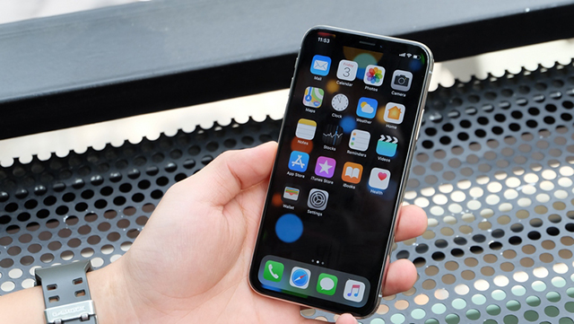
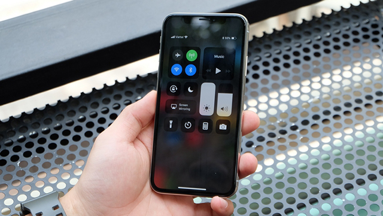
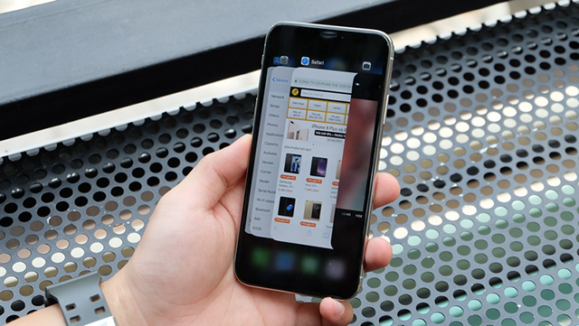
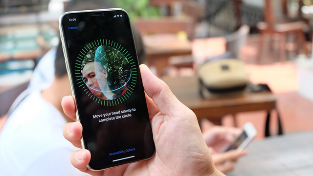
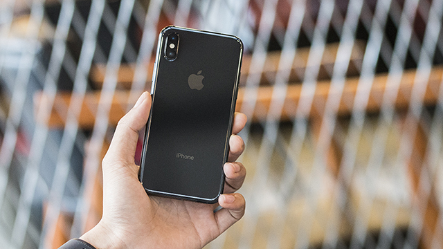
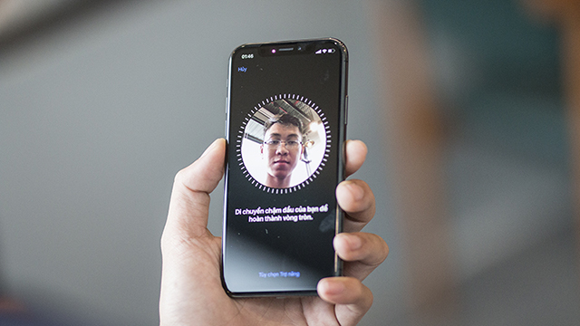
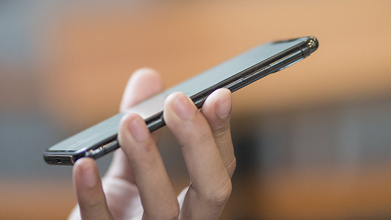
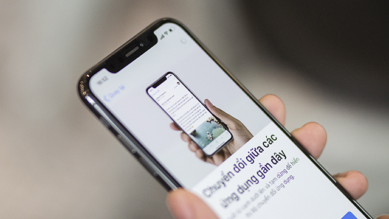
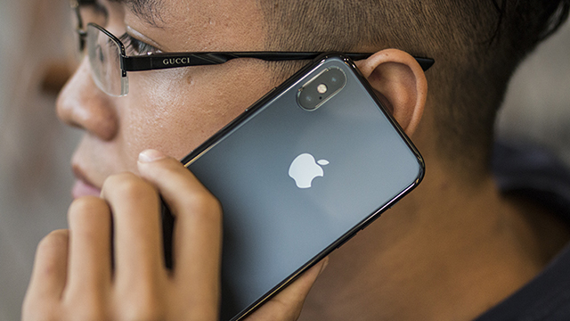

Như các bạn cũng đã biết thì đã 4 năm kể từ chiếc điện thoại iPhone 6 và iPhone 6 Plus thì Apple vẫn chưa có thay đổi nào đáng kể trong thiết kế của mình
Nhưng với iPhone X thì đó lại là 1 câu chuyện hoàn toàn khác, máy chuyển qua sử dụng màn hình tỉ lệ 19.5:9 mới mẻ với phần diện tích hiển thị mặt trước cực lớn.
Mặt lưng kính hỗ trợ sạc nhanh không dây cũng như phần camera kép đặt dọc cũng là những thứ đầu tiên xuất hiện trên 1 chiếc iPhone.
Điểm khiến iPhone X bị chê nhiều nhất đó chính là phần "tai thỏ" phía trên màn hình, Apple đã chấp nhận điều này để đặt cụm camera TrueDepth mới của hãng.
Màn hình kích thước 5.8 inch độ phân giải 1125 x 2436 pixels đem đến khả năng hiển thị xuất sắc.
iPhone X sử dụng tấm nền OLED (được tinh chỉnh bởi Apple) thay vì LCD như những chiếc iPhone trước đây và điều này đem lại cho máy 1 màu đen thể hiện rất sâu cùng khả năng tái tạo màu sắc không kém phần chính xác.
Touch ID trên iPhone X đã bị loại bỏ, thay vào đó là bạn sẽ chuyển qua sử dụng Face ID, một phương thức bảo mật sinh trắc học mới của Apple.
Với sự trợ giúp của cụm camera TrueDept thì iPhone X có khả năng nhận diện khuôn mặt 3D của người dùng từ đó mở khóa chiếc iPhone một cách nhanh chóng.
Tuy sẽ hơi hụt hẫng khi Touch ID đã quá quen thuộc trên những chiếc iPhone như tốc độ cũng như trải nghiệm "khóa như không khóa" của Face ID hoàn toàn có thể khiến bạn yên tâm sử dụng.
Không còn phím Home cứng nên các thao tác trên iPhone X cũng hoàn toàn khác so với những đàn anh đi trước.
Giờ đây chỉ với thao tác vuốt và vuốt từ cạnh dưới là bạn đã có thể truy cập vào đa nhiệm, trở về màn hình Home một cách nhanh chóng.
iPhone X vẫn sở hữu bộ đôi camera kép có cùng độ phân giải 12 MP nhưng camera tele thứ 2 với khẩu độ được nâng lên mức f/2.4 so với f/2.8 của iPhone 7 Plus.
Ngoài ra thì cả 2 camera trên iPhone X đều sở hữu cho mình khả năng chống rung quang học giúp bạn dễ dàng bắt trọn mọi khoảnh khắc trong cuộc sống.
Camera trước độ phân giải 7 MP với khả năng selfie xóa phông đáp ứng tốt mọi nhu cầu tự sướng của giới trẻ hiện nay.
Bộ đôi camera trên iPhone X được đánh giá rất cao về chất lượng ảnh chụp và là một trong những chiếc camera phone chụp ảnh đẹp nhất trong năm 2017.
Hiệu năng của những chiếc iPhone chưa bao giờ là vấn đề và với iPhone X thì mọi thứ vẫn rất ấn tượng.
Con chip Apple A11 Bionic 6 nhân kết hợp với 3 GB RAM thì iPhone X tự tin là chiếc smartphone mạnh mẽ nhất mà Apple từng sản xuất.
Ngoài ra với iPhone X thì Apple cũng nhấn mạnh với trải nghiệm thực tế ảo tăng cường giúp bạn có những phút giây thư giãn thú vị.
\Viên pin trên iPhone X có dung lượng 2716 mAh (lớn hơn cả trên iPhone 8 Plus) cho bạn sử dụng khá ổn trong khoảng một ngày liên tục.